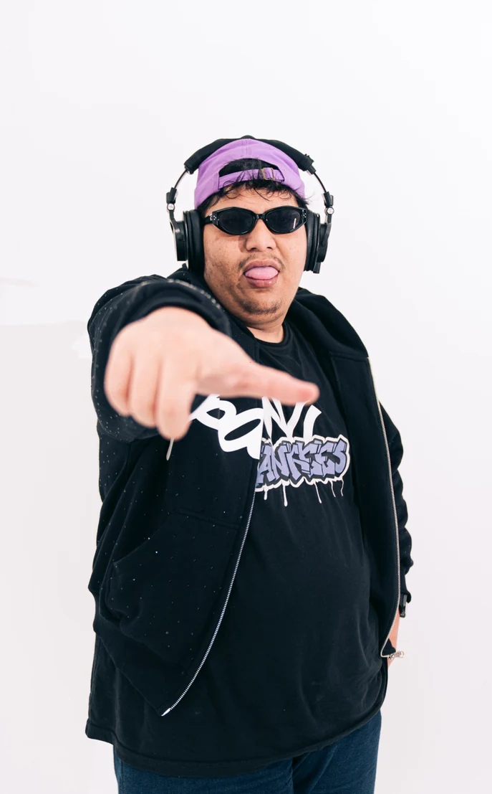

Skip to content
ARTIST / 26
Menu
Home
Profile
Music
Shows
Gallery
Riders
Media
Booking
EPK
Book ↗
Motion
Home
/ Gallery
JXXZY / 04
GALLERY
.
Official performance photography
04
PHOTO SELECTS
FRAMES OF ENERGY
.
Crowd atmosphere ↗
Crowd energy ↗
Room movement ↗
FYNE Jakarta ↗
Live identity ↗
DJ booth ↗
Official portrait ↗
Front portrait ↗

Artist action ↗
Event portrait ↗
Back portrait ↗
↑
Preview
×
Open original ↗